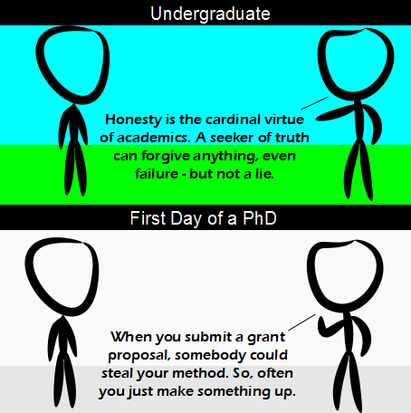

Comic JK 758
When I Feel Like It
⇤
<
?
>
⇥

⇤
<
?
>
⇥
Forum
.
RSS
.
Digg
.
Facebook
.
Reddit
.
Twitter
.
Stumbleupon
Enter your thoughts on number 758 here. Please, no spamming, trolling, phreaking, or seeking truth. I submitted a grant proposal to study your ugly mother and ended up using the grant to study your hot sister. I'm a seeker of truth. I'm really interested in philosophy of science, though I can't say I've studied it past my own musings on it. I ... guess I shouldn't go into academic research. (... how is the private sector better, exactly?) >It's not. There isn't really anywhere you can just research full-time. (Something my sister found annoying. She enjoys research, she dislikes all the other stuff the people that pay her want her to do) >>Become an emeritus professor, then you can do research full time. >>>I am the Seeker of Truth, i have a sword to that effect! >>>>Heh. Reference. Sometimes it's so much hassle getting a grant proposal into a form that's acceptable - including a detailed description of the intended results - that another tactic is to do the research first so that you'd have everything you need for the grant proposal. The research is funded by the grant awarded for the previous proposal. > So your first project must be done without funding? >> Either that, or you succeed in re-routing some funds originally assigned to another project... >>> That's pretty much how it works nowadays. In all my many years in academia, I rarely saw grant money fund what it was actually intended for.